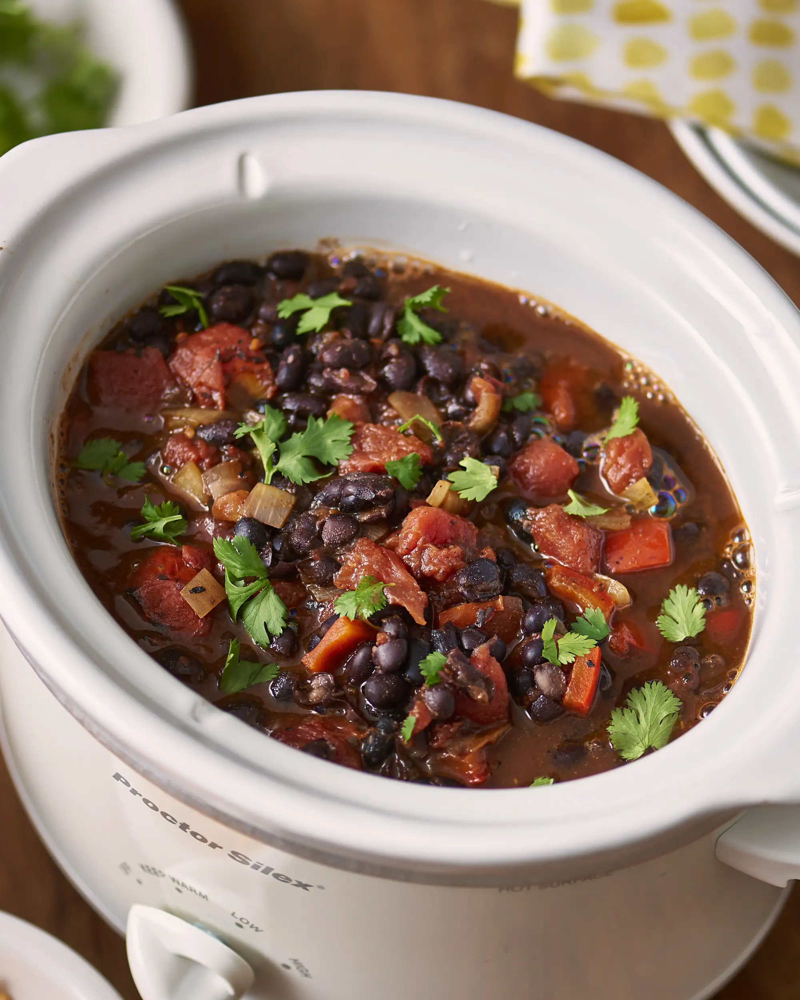

Chili Beans

Description
This healthy and satisfying recipe is a filling as it is beautiful.
Chili is a common favorite because of its simplicity, cheap ingredients and heartiness.
Ingredients
- 1 pound ground beef
- 2 cups dried pinto beans
- 1/2 cup chopped onion
- 1/2 teaspoon cumin
- 2 tablespoon garlic
- salt
Steps
- Fill two gallon pot with one gallon of water.
- Remove stones and dirt from dried beans, rinse and place in pot.
- Add garlic and cumin.
- Heat to a boil, then turn down to simmer.
- Brown ground beef in a skillet, drain oil and add meat to beans.
- Continue simmering beans until soft (approximately 3 hours).
- Add salt to own preference
- Serve in bowls.
- Enjoy!!